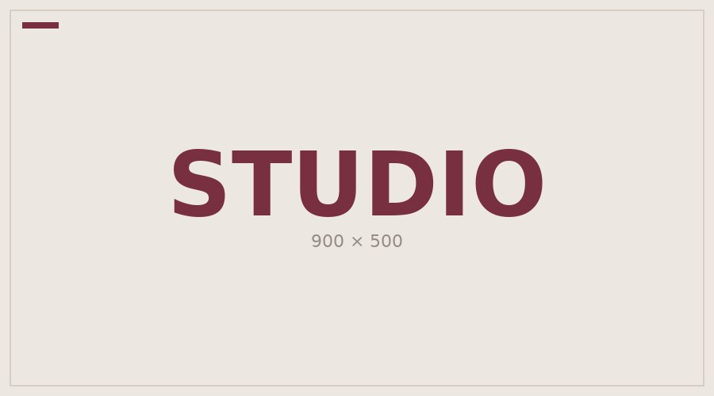

Seminole Sound 91.5
On Air Now: Show Name, DJ Name, and Time Block
Recently Played:
-
Enter Sandman by Metallica
-
Black Hole Sun by Soundgarden
-
CAKE by The Distance
-
Creep by Radiohead
-
Friday I'm in Love by The Cure
Station History
Real paragraph 1
Real paragraph 2
